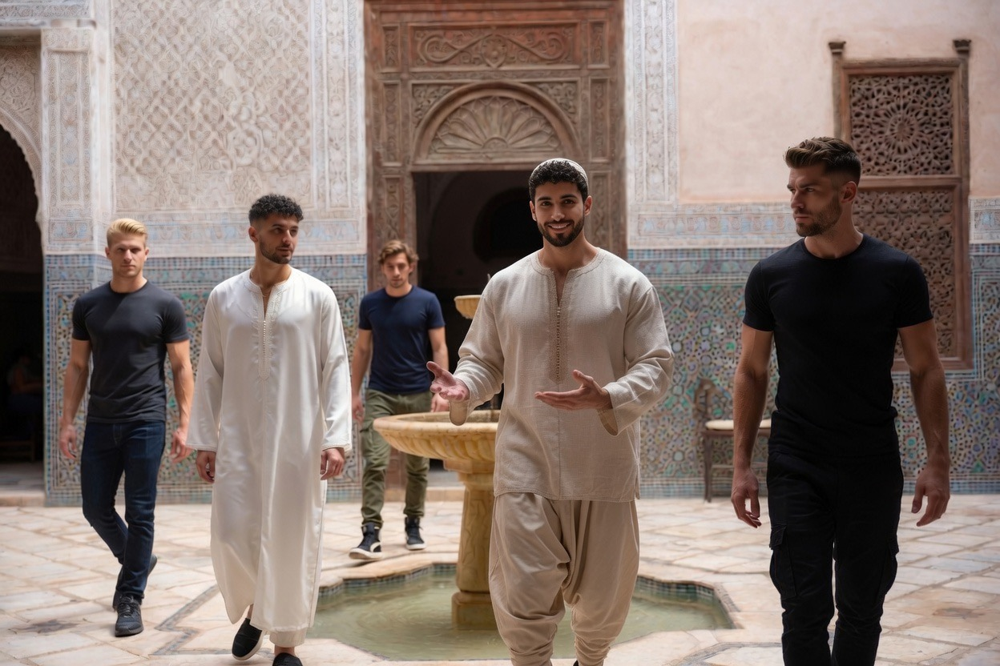
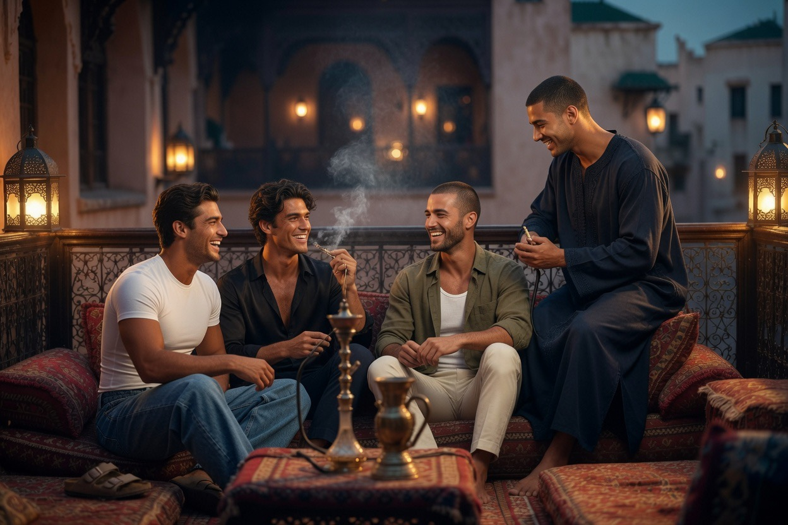

Séjourner
Très peu d’hôtes. Une immersion dans le rythme de la maison — pas un produit touristique.

L’hôte n’achète pas un séjour dans un resort. Il est invité, pour un temps limité, dans une maison vivante — où la formation des jeunes, les disciplines du Dar al-Hiraf et le rythme de la prière ne font qu’un. Prière, travail des métiers, étude, silence, beauté des matières, socialité discrète entre résidents : tout cela constitue le même engagement.
Le nombre de places est volontairement restreint. La majorité des résidents sont des jeunes en formation. L’hospitalité reste rare, pour ne pas dénaturer le rythme de la maison.
Dans la tradition, l’hôte est sacré. Le recevoir n’est pas un service commercial : c’est un devoir et un honneur. Au Riad, cette règle ancienne reste vivante.


Immersion
Partager le rythme : Fajr à Isha, repas, silence, parfois un atelier ou une conversation.
Rareté
Peu de chambres destinées aux hôtes. La maison n’est pas calibrée pour le volume.
Sélectivité
Les demandes sont examinées une à une. L’accord n’est pas automatique.

Ce que l’hôte trouve
Dans la culture de la maison, l’hôte est sacré. L’accueil n’est pas un service : c’est un geste ancien, un devoir et un honneur.
Séjourner ici, ce n’est pas réserver une chambre de luxe. C’est entrer — le temps d’un passage — dans un kosmos déjà habité : la prière qui scande le jour, le travail des métiers, l’étude, la discipline du corps, la table partagée, le silence, la conversation entre ceux qui vivent ensemble. La tradition n’est pas un décor. C’est une forme de vie encore pleinement actuelle.
Les jeunes en formation y mettent chaque jour leur engagement et leur exigence. L’hôte est invité à en percevoir la densité — sans la déranger, sans la transformer en spectacle.
- • Une suite ou une chambre de haut standing, conçue dans le langage du riad — matières nobles, lumière, silence
- • Les repas partagés selon le rythme du jour, avec ceux qui vivent ici
- • L’accès, selon les moments, au patio, au jardin, à la terrasse
- • La possibilité d’assister — sans déranger — au travail des ateliers
- • Le silence de la nuit après Isha
نَزِيلُكَ لا تَخُنْهُ في مَقَامٍ
فَحَقُّ الضَّيْفِ أَنْ يُكْرَمَ وَيُصَانَ
« Ne trahis pas ton hôte en ce séjour :
le droit de l’invité est d’être honoré et protégé. »
Adab classique — tradition de la diyāfa
C’est une opportunité rare : s’immerger dans un contexte exclusif où la tradition n’est pas un décor, mais une forme de vie encore pleinement actuelle.
Écrire à info@borgoideale.com